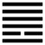

Thiên Hỏa Đồng Nhân (同人 tóng rén)
Không thể bế tắc, cách tuyệt nhau mãi được, tất phải có lúc giao thông hòa hợp với nhau; cho nên sau quẻ Bĩ tới quẻ Đồng Nhân.
Đồng nhân là cùng chung với người, đồng tâm với người.
Thoán từ:
同人于野, 亨．利涉大川．利君子貞．
Đồng nhân vu dã, hanh. Lợi thiệp đại xuyên. Lợi quân tử trinh.
Dịch: Cùng với người ở cánh đồng (mênh mông) thì hanh thông. (gian hiểm như) Lội qua sông lớn, cũng lợi. Quẻ này lợi cho người quân tử trung chính.
Giảng: li ở dưới là lửa, sáng, văn mình, Càn ở trên là Trời. Quẻ này có tượng lửa bốc lên cao tới trời, cũng soi khắp thế giới (cánh đồng mênh mông có nghĩa đó). Cho nên tốt. dù có hiểm trở gì, cũng vượt được (Phan Bội Châu bảo đó “chính là cảnh tương đại đồng rất vui vẻ”) Muốn vậy phải có được trung chính của người quân tử.
Thoán truyện cùng hào 2 ở nội quái ly, hào âm độc nhất, quan trọng nhất trong 6 hào mà giảng thêm:
Hào đó âm nhu đắc vị (tức là chính) đắc trung, lại ứng hợp với hào 5 dương cương cũng đắc vị đắc trung trong ngọai quái Càn, thế là có hiện tượng nội ngọai tương đồng, nên gọi là đồng nhân. Văn minh (Ly) ở phía trong, cương kiện (Càn) tức dụng ở ngoài, mà được cả trung lẫn chính, ứng hợp với nhau, đó là tượng người quân tử thông suốt được tâm tri của thiên hạ.
Đại tượng truyện bàn thêm: Người ta muốn thực hiện được cảnh tượng mọi vật cùng sống chung với nhau thì phải phân biệt từng loại của các chủng tộc, xét kỹ mỗi sự vật (quân tử dĩ loại tộc, biện vật); hễ cùng loại thì đặt chung với nhau và cho mỗi vật được phát triển sở năng, thỏa được sở nguyện, có vậy thì tuy bất đồng mà hòa đồng được.
Ý nghĩa các hào:
1.
初九: 同人于門, 无咎．
Sơ cửu: Đồng nhân vu môn, vô cữu.
Dịch: Hào 1, dương : Ra khỏi cửa để cùng chung với người thì không có lỗi.
Giảng: Hào dương này, như người quân tử mới bắt đầu ra đời, đã muốn “đồng” (cùng chung) với người khác thì có lỗi, có gì đáng trách đâu?
2.
六二: 同人于宗, 吝．
Lục nhị: Đồng nhân vu tôn, lận.
Dịch: Hào 2, âm: (chỉ) chung hợp với người trong họ, trong đảng phái, xấu hổ.
Giảng: Hào này tuy đắc trung đắc chính, nhưng ở vào thời Đồng nhân, nên cùng chung với mọi người mà lại chỉ ứng hợp riêng với hào 5 ở trên, như chỉ cùng chung với người trong họ, trong đảng phái của mình thôi, thế là hẹp hòi, đáng xấu hổ.
3.
九三: 伏戎于莽, 升其高陵, 三歲不興．
Cửu tam: Phục nhung vu mãng,
Thăng kì cao lăng, tam tuế bất hưng.
Dịch: Hào 3, dương : núp quân ở rừng rậm (mà thập thò) lên gò cao, ba năm chẳng hưng vượng được.
Giảng: Hào này muốn hợp với hào 2 (âm) ở dưới, nhưng nó quá cương (dương ở dương vị), lại bất đắc trung, như một kẻ cường bạo; mà 2 đã ứng hợp với 5 ở trên, 3 sợ 5 mạnh nên không dám công kích 2, chỉ núp trong rừng, rình trộm, rồi thập thò lên đồi cao mà ngó (3 ở trên cùng nội quái, nên nói vậy); như vậy ba năm cũng không tiến (hưng lên) được.
4.
九四: 乘其墉, 弗, 克攻, 吉．
Cửu tứ: thừa kỳ dung, phất, khắc công, cát.
Dịch: Hào 4, dương : cưỡi lên tường đất rồi mà không dám đánh thế là tốt.
Giảng: hào này cũng là dương cương, bất trung, bất chính, cũng muốn hợp với 2, lăng áp 3 mà cướp 2 (hào 3 ở giữa 2 và 4 cũng như bức tường ngăn cách 2 và 4, 4 ở trên 3 như đã cưỡi lên bức tường đó); nhưng tuy cương mà ở vị âm, còn có chút nhu, nên nghĩ lại, không thể lấn áp 3 được, như vậy không nên, cho nên Hào từ bảo “thế thì tốt”.
Tiểu tượng truyện khen là biết phản tắc (反則) tức biết trở lại phép tắc.
5.
九五: 同人, 先號咷而. 後笑, 大師克相遇．
Cửu ngũ: Đồng nhân, tiên hào đào nhi
Hậu tiếu, đại sư khắc tương ngộ.
Dịch: Hào 5, dương: Cùng với người, trước thì kêu rêu, sau thì cười, phải dùng đại quân đánh rồi mới gặp nhau.
Giảng: hào này dương cương trung chính, ứng hợp với hào 2, thật là đồng tâm đồng đức, tốt. Nhưng giữa 5 và 2, còn có hai hào 3 và 4 ngăn cản, dèm pha, phá rối, nên mới đầu phải kêu rêu, phải dùng đại quân dẹp 3 và 4 rồi 2 và 5 mới gặp nhau mà vui cười. Công việc hòa đồng nào mới đầu cũng bị nhiều kẻ ngăn cản như vậy, không dễ dàng thực hiện ngay được, dù là hợp với công lý, với hạnh phúc số đông.
6.
上九: 同人于郊, 无悔．
Thượng cửu: Đồng nhân vu giao, vô hối.
Dịch: Hào trên cùng, dương : cùng với người ở cánh đồng ngoài đô thành, không hối hận.
Giảng: “Giao” là cánh đồng ngòai đô thành, không rộng bằng “dã” (đồng nội nơi nhà quê). Hào này tuy ở cuối quẻ Đồng nhân, không có hào nào ứng hợp với nó, cho nên chí chưa được thì hành như mình muốn, mới chỉ như cùng với người ở cánh đồng ngoài đô thành thôi, chưa ở giữa quãng đồng nội được.
*
Đọc quẻ này, chúng ta rút ra được hai lời khuyên:
- Muốn hòa đồng thì đừng có tinh thần đảng phái; phải tôn trọng đặc tính của mỗi hạng người, khả năng cùng nhu cầu của mỗi người.
- Công việc hòa động mọi người tuy rất chính đáng, mang hạnh phúc cho dân chúng nhưng cũng gian nan, bị nhiều kẻ phá.